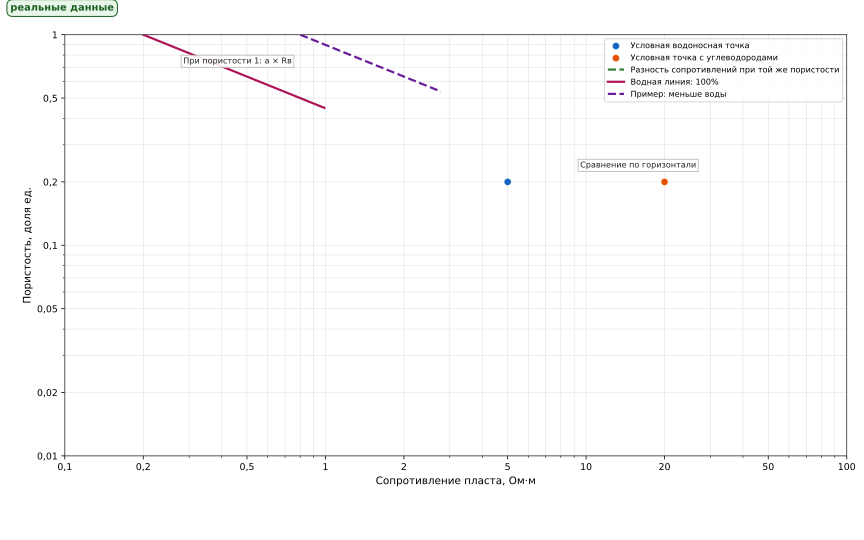
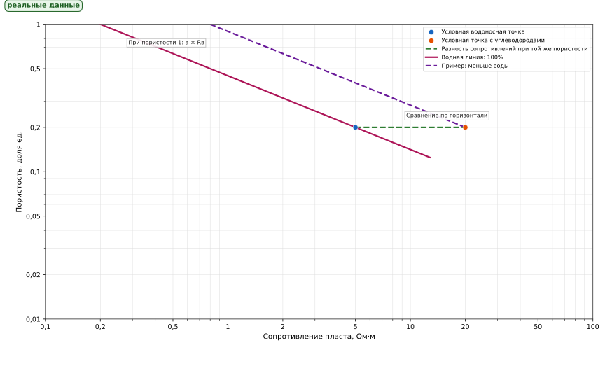
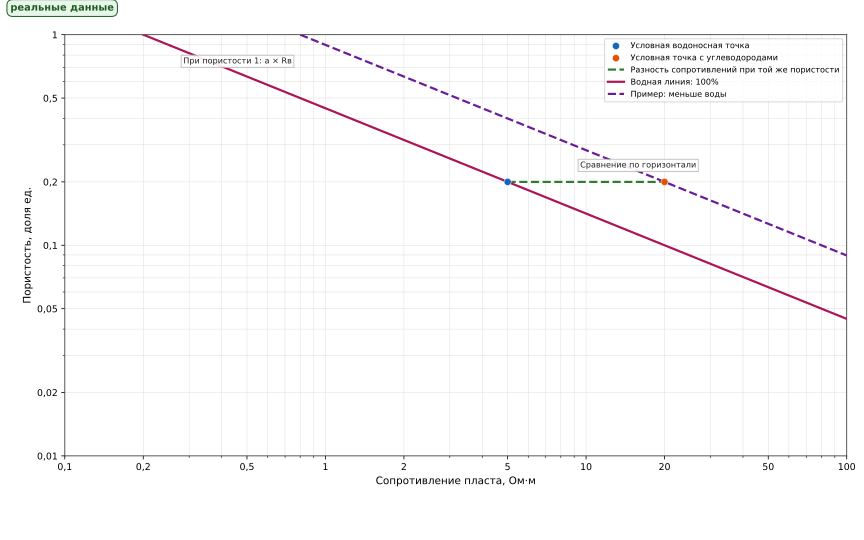

По наклону водоносной прямой оценивают показатель цементации.
Сдвиг точки вправо от прямой помогает оценить, сколько воды в её порах.
Пороговая идея. Если поменять оси местами, изменится то, как с графика читают наклон и пересечение. модель
Интерактив: как это происходит



1 / 3
Перед чтением числа спросите, откуда отмерять отклонение.
Допущения: Условные параметры: a × Rв = 0.2 Ом·м, m = 2. Для второй линии коэффициент 0.8 Ом·м задан как условный сдвиг, без вычисления водонасыщенности. Точки при пористости 0.2 рассчитаны по этим линиям; это не измерения.; Схема реализует отдельно описанные в узле наклон и пересечение; не подставляет коэффициенты из неоднозначной записи для обмена осей. Выбран один из диапазонов сопротивления, приведённых в узле: 0.1–100 Ом·м..
Как это работает
Почему оси переставили
Если сопротивление по вертикали, наклон водной линии, прямой водоносных точек, даёт показатель цементации. Пересечение даёт произведение коэффициента извилистости и сопротивления воды. На практике сопротивление отложили по горизонтали, а пористость по вертикали из-за доступной логарифмической бумаги. Для пористости берут две декады, для сопротивления — три. Декада — интервал изменения величины в десять раз. стр. 132
«This form of the equation ($y = b + mx$) indicates that by plotting $R_t$ on the y-axis (on a logarithmic scale) against porosity ($\phi$) on the x-axis (on a logarithmic scale), one can determine the product ($a \times R_w$) from intercept of the line (b), and the cementation exponent ($m$) from the slope of the line ($m$).»
«In practice, the resistivity ($R_t$) is usually plotted on the x-axis and the porosity ($\phi$) on the y-axis (Figure 7.4).»
«This convention stems from the availability of full-logarithmic graph paper (both scales logarithmic) at the time Pickett developed the technique.»
«The best format to use (for the best data resolution) is two decades for porosity (0.01 to 1.0, or 1% to 100%) and three decades for the resistivity (0.1 to 100, or 1 to 1000).»
«The only 2-by-3 full-logarithmic paper available was constructed with 2 decades on the y-axis and 3 decades on the x-axis so the plot was modified to fit the paper»
«Using the convention driven by graph-paper availability, the equation becomes:»
Шкалы
По вертикали берут 0,01–1,0, то есть 1%–100% пористости. По горизонтали подходят диапазоны сопротивления 0,1–100 или 1–1000. Автор приводит запись уравнения именно для этого расположения осей. стр. 132
Водная линия
На график можно нанести водоносные точки и точки с углеводородами, то есть нефтью или газом. Водоносные точки разной пористости лежат на прямой, линии полного водонасыщения. Если сопротивление по горизонтали, наклон водной линии равен $-1/m$, где $m$ — показатель цементации. Пересечение при пористости 1,0 даёт произведение $aR_w$. При известном или оценённом $a$ из произведения получают сопротивление пластовой воды. стр. 132
«Plotting a mixture of water-bearing and hydrocarbon-bearing points on a Pickett plot results in the following attributes (as shown in Figure 7.4):»
«Water-bearing points of different porosities plot along a straight line with a slope of ($-1/m$) and an intercept (at porosity = 1.0) of ($a \times R_w$).»
«From this line, the cementation exponent ($m$) can be determined, and if the tortuosity factor ($a$) is known (or can be estimated), $R_w$ can be predicted.»
«This is the water-bearing, or $R_o$, line.»
Что значит сдвиг
Точки с углеводородами сдвигаются вправо по сравнению с водной линией из-за большего сопротивления. Величина горизонтального отступа зависит от водонасыщенности, доли воды в порах. Для её определения нужен известный или оценённый показатель насыщения, степень при водонасыщенности. Линии постоянной водонасыщенности параллельны водной линии. По графику оценивают сопротивление воды и показатель цементации без опоры только на местные сведения или дорогие измерения на керне. стр. 132
«Hydrocarbon-bearing points lie away from the line, moved horizontally to the right from the water-bearing line by their increased resistivity.»
«The horizontal distance of a point from the water-bearing line depends on the water saturation ($S_w$) of that point.»
«If the saturation exponent ($n$) is known (or can be estimated), the water saturation can be determined.»
«Lines of constant water saturation lie parallel to the water-bearing line.»
«The power in the Pickett plot is that water resistivity ($R_w$) and cementation exponent ($m$) can be estimated from the data, rather than having to be derived from local knowledge or from expensive core measurements.»
схема
Водная линия служит опорой для чтения горизонтального отклонения.
Класс B · схема · нарисовано кодом · стр. 132
Решение на данных
Что означает сдвиг точки
Признаки
Пористость точки
Сопротивление точки
Водная линия
↓
Правило
Сравните координаты по горизонтали при одной пористости. стр. 132
↓
Вывод
Больший отступ вправо соответствует меньшей водонасыщенности при известных параметрах.
Потренируйтесь
Дано: Точка лежит правее водной линии при той же пористости. (модель: условие из узла)
Горизонтальная ось показывает сопротивление.
Цифры и условия
Две декады по пористости охватывают 0,01–1,0, то есть 1%–100%. стр. 132
Три декады по сопротивлению охватывают 0,1–100 или 1–1000. стр. 132
Пересечение при пористости 1,0 даёт произведение $aR_w$. стр. 132
Для оценки насыщенности нужен известный или оценённый показатель насыщения. стр. 132
Запись для практического расположения осей, воспроизведённая из фрагмента без исправления коэффициентов. стр. 132
Обозначения
Обозначение
Что это
Единицы
$\phi$
пористость, доля объёма породы, занятая порами
доля
$a$
коэффициент извилистости
—
$R_w$
сопротивление пластовой воды
—
$m$
показатель цементации
—
$R_t$
истинное сопротивление пласта
—
$n$
показатель насыщения
—
$S_w$
доля пор, заполненная водой
доля
Что это значит для данных по книге
Водная линия даёт параметры через наклон и пересечение, а насыщение появляется как смещение относительно этой линии.
Вход
Точки сопротивления и пористости; оценки коэффициента извилистости и показателя насыщения.
Выход
Водная линия, показатель цементации и условные оценки сопротивления воды и водонасыщенности.
Где ломается
Обмен осей меняет наклон; без оценок коэффициентов нельзя однозначно получить соответствующие параметры.
Где здесь ручной труд специалиста
Входные данные
Каротажные точки и оценки параметров.
Ручные шаги
Выбрать шкалы, провести водную линию, снять наклон и пересечение.
Точки суждения
Определить, какие точки относятся к водной линии и как оценить коэффициенты.
Время
Число операций зависит от подготовки данных; в главе оно качественно не оценено.
Типичные ошибки
Перепутать оси или измерить кратчайшее расстояние вместо горизонтального смещения.
Аналогия модель
На диаграмме рассеяния сначала калибруют базовую линию, затем оценивают отклонения.
Где аналогия перестаёт работать: У отклонения здесь задано физическое направление: по сопротивлению при той же пористости, а не любое расстояние до прямой.
Как это делается сейчас модель
Оси и их диапазоны настраивают в цифровом графике, а не подгоняют под доступный формат логарифмической бумаги.
Глубже
Неоднозначности записи модель
Формулу для переставленных осей фрагмент даёт в виде, который при алгебраической проверке не совпадает с предыдущей логарифмической записью. Пары границ сопротивления также различаются; причина не указана. Для водной линии авторы отдельно описывают наклон и пересечение.
Новые понятия
Диаграмма Пикетта (Pickett plot)
Диаграмма сопротивления и пористости, графически решающая уравнение Арчи. стр. 132
Пористость (porosity)
Доля общего объёма породы, занятая порами. модель
Водонасыщенность (water saturation)
Доля объёма пор, заполненная водой. модель
Истинное сопротивление пласта (true resistivity)
Сопротивление самого пласта, обозначение R_t. модель
Сопротивление пластовой воды (formation water resistivity)
Сопротивление воды в порах пласта, обозначение R_w. модель
Коэффициент извилистости (tortuosity factor)
Параметр a в уравнении Арчи; входит в произведение с сопротивлением воды. модель
Показатель цементации (cementation exponent)
Степень m, задающая зависимость сопротивления от пористости в уравнении Арчи. модель
Показатель насыщения (saturation exponent)
Степень n, задающая зависимость сопротивления от водонасыщенности в уравнении Арчи. модель
Водная линия (water-bearing line)
Прямая, на которой лежат водонасыщенные точки разной пористости; также линия R_o. стр. 132
Логарифмическая шкала (logarithmic scale)
Шкала, где одинаковый шаг соответствует одинаковому изменению во столько же раз. модель
Декада (decade)
Интервал шкалы, в котором верхнее значение в десять раз больше нижнего. модель
Пересечение (intercept)
Точка встречи прямой с указанной осью или опорной линией. модель
Керн (core)
Образец породы, извлечённый из скважины. модель
Наклон прямой (slope)
Изменение вертикальной логарифмической координаты на единицу горизонтальной логарифмической координаты. модель
Проверь себя
Пропуск в тексте
Восстановите геометрию диаграммы.
Линии постоянной водонасыщенности водной линии.
Верный ответ: Линии постоянной водонасыщенности [параллельны] водной линии.
Все утверждения шага с дословной цитатой автора и страницей книги (по PDF).
При сопротивлении на вертикальной оси и пористости на горизонтальной произведение определяют из пересечения, показатель цементации — из наклона. вывод
«This form of the equation ($y = b + mx$) indicates that by plotting $R_t$ on the y-axis (on a logarithmic scale) against porosity ($\phi$) on the x-axis (on a logarithmic scale), one can determine the product ($a \times R_w$) from intercept of the line (b), and the cementation exponent ($m$) from the slope of the line ($m$).»
На практике сопротивление обычно откладывают горизонтально, а пористость вертикально. наблюдение
«In practice, the resistivity ($R_t$) is usually plotted on the x-axis and the porosity ($\phi$) on the y-axis (Figure 7.4).»
Принятое расположение осей исторически объясняется доступностью бумаги с двумя логарифмическими шкалами. наблюдение
«This convention stems from the availability of full-logarithmic graph paper (both scales logarithmic) at the time Pickett developed the technique.»
Для лучшего разрешения предложены две декады пористости, 0.01–1.0, или 1%–100%, и три декады сопротивления; в тексте указаны 0.1–100 или 1–1000. наблюдение
«The best format to use (for the best data resolution) is two decades for porosity (0.01 to 1.0, or 1% to 100%) and three decades for the resistivity (0.1 to 100, or 1 to 1000).»
График подстроили под доступную бумагу: 2 декады по вертикали, 3 по горизонтали. наблюдение
«The only 2-by-3 full-logarithmic paper available was constructed with 2 decades on the y-axis and 3 decades on the x-axis so the plot was modified to fit the paper»
Автор приводит запись уравнения для осей, принятых в практике построения. наблюдение
«Using the convention driven by graph-paper availability, the equation becomes:»
Для чтения графика автор рассматривает смесь водоносных и углеводородных точек. наблюдение
«Plotting a mixture of water-bearing and hydrocarbon-bearing points on a Pickett plot results in the following attributes (as shown in Figure 7.4):»
Точки водоносных зон разной пористости ложатся на прямую с наклоном −1/m; пересечение при пористости 1.0 даёт произведение коэффициента извилистости на сопротивление воды. вывод
«Water-bearing points of different porosities plot along a straight line with a slope of ($-1/m$) and an intercept (at porosity = 1.0) of ($a \times R_w$).»
Из линии определяют показатель цементации, а при известном или оценённом коэффициенте извилистости можно оценить сопротивление пластовой воды. вывод
«From this line, the cementation exponent ($m$) can be determined, and if the tortuosity factor ($a$) is known (or can be estimated), $R_w$ can be predicted.»
Эта прямая называется водной линией, или линией сопротивления полного водонасыщения. наблюдение
«This is the water-bearing, or $R_o$, line.»
Углеводородные точки отстоят вправо от водной линии из-за повышенного сопротивления. вывод
«Hydrocarbon-bearing points lie away from the line, moved horizontally to the right from the water-bearing line by their increased resistivity.»
Горизонтальное расстояние от водной линии зависит от водонасыщенности точки. вывод
«The horizontal distance of a point from the water-bearing line depends on the water saturation ($S_w$) of that point.»
Для определения водонасыщенности требуется известный или оценённый показатель насыщения. допущение
«If the saturation exponent ($n$) is known (or can be estimated), the water saturation can be determined.»
Линии постоянной водонасыщенности параллельны водной линии. наблюдение
«Lines of constant water saturation lie parallel to the water-bearing line.»
Диаграмма позволяет оценить сопротивление воды и показатель цементации по данным, а не только по местным сведениям или дорогим измерениям на керне. наблюдение
«The power in the Pickett plot is that water resistivity ($R_w$) and cementation exponent ($m$) can be estimated from the data, rather than having to be derived from local knowledge or from expensive core measurements.»
Исходный текст урока
Стр. 132 · Pickett Crossplot Method
This form of the equation ($y = b + mx$) indicates that by plotting $R_t$ on the y-axis (on a logarithmic scale) against porosity ($\phi$) on the x-axis (on a logarithmic scale), one can determine the product ($a \times R_w$) from intercept of the line (b), and the cementation exponent ($m$) from the slope of the line ($m$). In practice, the resistivity ($R_t$) is usually plotted on the x-axis and the porosity ($\phi$) on the y-axis (Figure 7.4). This convention stems from the availability of full-logarithmic graph paper (both scales logarithmic) at the time Pickett developed the technique. The best format to use (for the best data resolution) is two decades for porosity (0.01 to 1.0, or 1% to 100%) and three decades for the resistivity (0.1 to 100, or 1 to 1000). The only 2-by-3 full-logarithmic paper available was constructed with 2 decades on the y-axis and 3 decades on the x-axis so the plot was modified to fit the paper (G. R.
Стр. 132 · Pickett Crossplot Method
Pickett, personal communication).
Стр. 132 · Pickett Crossplot Method
Using the convention driven by graph-paper availability, the equation becomes:
Plotting a mixture of water-bearing and hydrocarbon-bearing points on a Pickett plot results in the following attributes (as shown in Figure 7.4):
Стр. 132 · Pickett Crossplot Method
- Water-bearing points of different porosities plot along a straight line with a slope of ($-1/m$) and an intercept (at porosity = 1.0) of ($a \times R_w$). From this line, the cementation exponent ($m$) can be determined, and if the tortuosity factor ($a$) is known (or can be estimated), $R_w$ can be predicted. This is the water-bearing, or $R_o$, line.
Стр. 132 · Pickett Crossplot Method
- Hydrocarbon-bearing points lie away from the line, moved horizontally to the right from the water-bearing line by their increased resistivity. The horizontal distance of a point from the water-bearing line depends on the water saturation ($S_w$) of that point. If the saturation exponent ($n$) is known (or can be estimated), the water saturation can be determined. Lines of constant water saturation lie parallel to the water-bearing line.
Стр. 132 · Pickett Crossplot Method
The power in the Pickett plot is that water resistivity ($R_w$) and cementation exponent ($m$) can be estimated from the data, rather than having to be derived from local knowledge or from expensive core measurements.